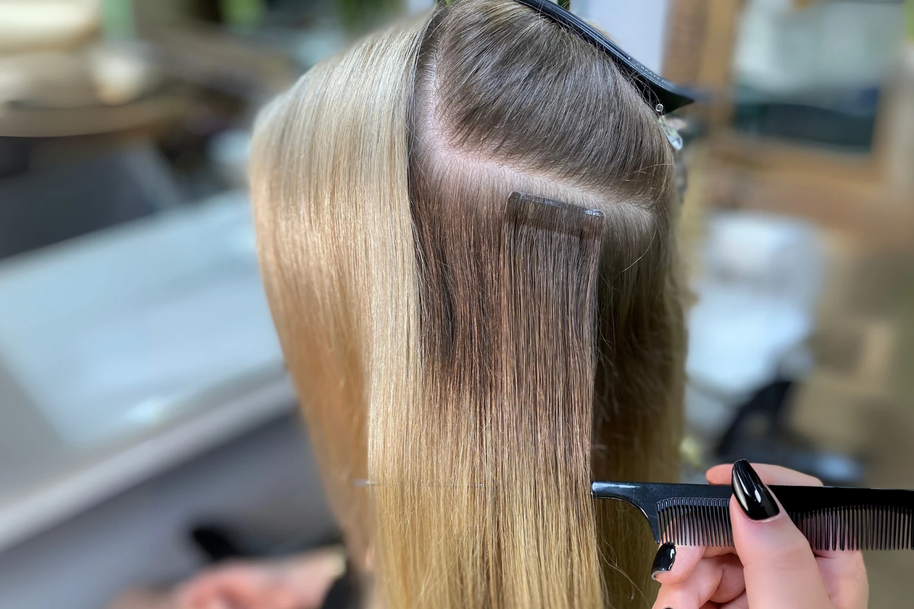
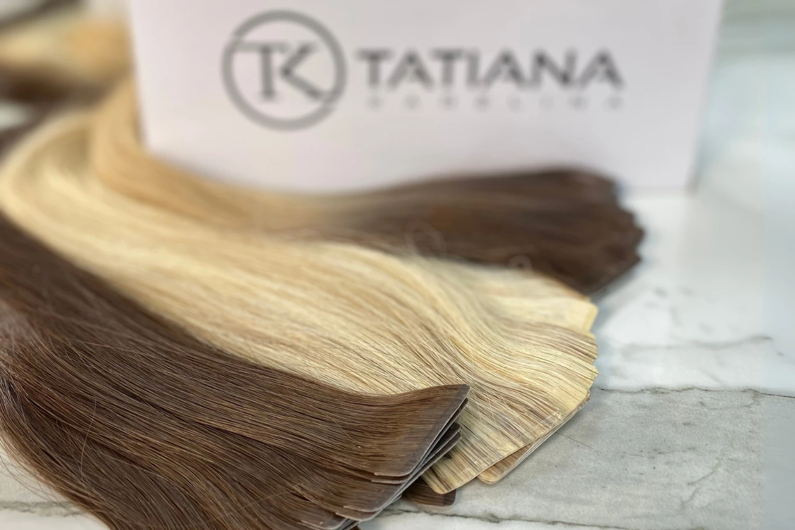

Tape Hair Extensions

Russian, invisible and fast
What Are Tape Hair Extensions?
Tape hair extensions are a semi permanent method ideal for those who want less commitment than permanent techniques. They are perfect if you prefer a flat, comfortable feel, want to control your budget, or need a quick application. Applied in pairs with your natural hair in between, tapes are ultra thin, reusable, and cause no damage. Each hair is injected by hand into an invisible seam that mimics natural roots, making them virtually undetectable even up close.
Fitting takes just 20 to 60 minutes, and your perfect colour is achieved without bleach. Tapes suit fine hair, as they sit flat against the scalp and feel lightweight and comfortable. Because we blend shades by hand into each tape, you achieve a perfect colour match without needing to bleach or dye your natural hair, and the hair can be reused many times.
- 20 to 60 minutesFitting time
- From £145Reusable many times
- Ultra thin and flatIdeal for fine hair
- 100% Russian hairColour matched without dye
Our signature approach
What Makes Our Tape Hair Extensions Different?
Unlike mass produced tape in extensions that are manufactured in China and simply relabelled before sale, our tapes are the only ones made with genuine coloured Russian hair. Produced in small batches, the colour is created by blending multiple shades of natural hair by hand rather than using dye, for a seamless and natural look.
The ultra slender tape system gives a full head of hair in under an hour, with secure and comfortable polyurethane adhesive. Hair is double stitched to the base to extend its life, and the weight is distributed evenly to prevent stress on your natural hair.

What to expect
The Tape Hair Extension Journey
- ConsultationIn our London or Manchester salon or by video call, we discuss your goals and help you decide how much hair you need for volume, length, or both.
- Colour matchWe combine tape sandwiches in different shades with your natural hair, creating a seamless and natural look without bleach or dye.
- The fittingUltra thin tape extensions are applied in pairs with your own hair sandwiched between, lying flat and comfortable against your scalp. It takes just 20 to 60 minutes.
- MaintenanceEvery six to eight weeks the tapes are repositioned, and the same tapes can be reused many times.
Before and afters
See Our Tape Transformations


Everything you want to know
Frequently Asked Questions
Why are Tatiana Karelina tape extensions considered the best in London and Manchester?
Our refined tape method delivers exceptionally flat, lightweight and invisible results, especially for fine or delicate hair. Each panel uses ultra thin seams lined with hand blended Russian hair for a flawless colour match. Tapes are mapped to your head shape for even weight distribution and natural movement. Fittings are fast, removal is gentle, and the same hair is reused at each 6 to 8 week maintenance. With clear pricing and reusable Russian hair, Tatiana Karelina is the top choice for tape extensions in London and Manchester.
When should I choose tape extensions?
Choose tapes if you want a quick, lightweight method that suits fine hair and can be reused multiple times.
What are the advantages of tape hair extensions?
Tape hair extensions offer many benefits. Length and volume can be achieved very quickly, usually 20 to 30 minutes for volume or 45 to 60 minutes for a full head of length. They are especially suited for clients with fine or thinning hair, as the tapes lie flat and feel light and comfortable. Unlike other adhesive methods, tapes are both non damaging and reusable. Multi shade blending creates a seamless colour match without the need for bleaching or dyeing, while the ultra thin design makes them comfortable to wear, versatile to style, and virtually invisible even when viewed up close.
What is the application and removal process like for tape hair extensions?
The application of tape hair extensions is quick and gentle. A thin section of your natural hair is placed between two tapes, creating a secure sandwich. A full fitting usually takes under an hour. Removal is just as straightforward. A professional tape remover dissolves the adhesive instantly, and the tapes slide out with the help of a pintail comb. Any residue is cleaned away, the hair is washed and dried, and fresh adhesive is applied so the tapes can be reapplied.
Are tape extensions suitable for fine hair?
Yes. Tape extensions were originally designed for women with fine or thin hair. Because they are lightweight and ultra flat, they blend naturally without putting stress on the scalp or weighing down the natural hair. This makes them one of the safest extension methods for delicate hair types, while still delivering impressive length and volume.
How long do tape hair extensions last?
Tape hair extensions typically last six to eight weeks before they need to be repositioned as your natural hair grows. Because the hair itself can be reused, clients can continue to wear the same set through many refits, making tapes both cost effective and sustainable over time.
Are tape hair extensions expensive?
No. Despite the high quality of our tape hair extensions, we have priced them to be among the most competitive in London. We offer a wide range of lengths and shades, as well as better long term value than many other salons, because our tapes are reusable and last through multiple refits.
How do I care for my tape hair extensions?
Caring for tape hair extensions is straightforward. Use a lightweight, sulphate free shampoo that cleanses your roots thoroughly without leaving product buildup or excess moisture, which could cause the tapes to slip. Avoid heavy oils or conditioners directly at the root. Beyond this, you can treat your tapes much like your natural hair, brushing regularly, heat styling with protection, and washing as normal.
Will people notice my tape extensions?
No. The ultra thin design of our tapes ensures they lie flat against your scalp and blend seamlessly with your natural hair. When properly matched in colour and texture, tape extensions are virtually undetectable, even when your hair is worn up.
Can I swim or exercise with tape hair extensions?
Yes, you can swim or exercise with tape hair extensions. We recommend rinsing your hair with clean water immediately after swimming in chlorine or salt water and always drying the roots thoroughly after exercise. Wearing your hair in a loose braid or ponytail helps prevent tangling and keeps your extensions secure.
Can tape extensions be reused?
Yes. One of the main advantages of tape hair extensions is that they are reusable. At maintenance appointments, the old adhesive is removed, the hair is cleaned, and fresh adhesive is applied before reinstalling. With proper care, the hair itself can last for many months and multiple refits, making tape extensions one of the best value options available.
How often do I need maintenance for tape extensions?
Tape extensions require repositioning every six to eight weeks, depending on your natural hair growth.
A Full Head in Under an Hour
Book a consultation in London or Manchester and feel how flat and light real Russian hair tapes are. Quick to fit, gentle to remove and reusable refit after refit.
Book Consultation